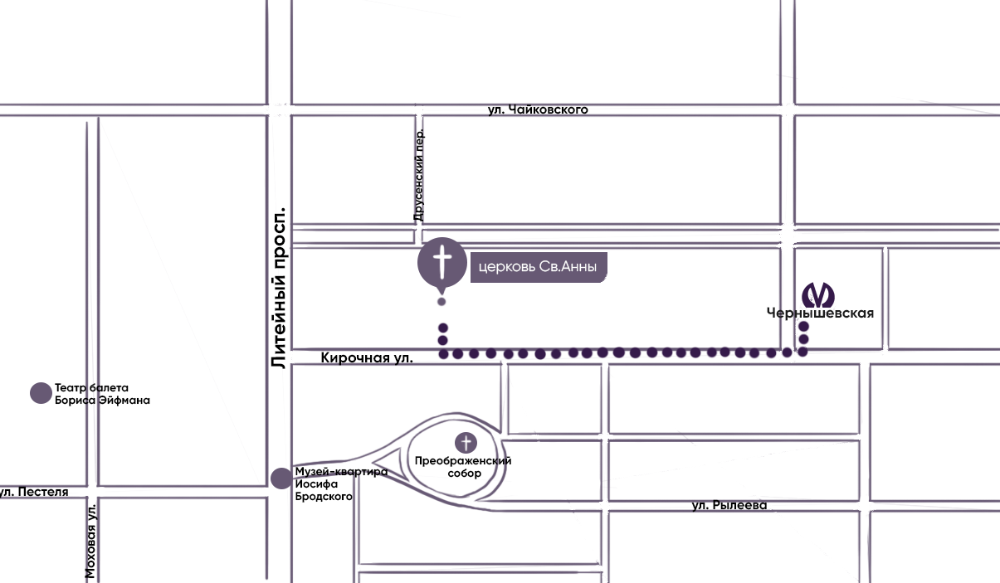

ГЛАВНАЯ
ИСТОРИЯ
О ЗДАНИИ
МЕРОПРИЯТИЯ
КОНТАКТЫ
КОНТАКТЫ
ЦЕРКВИ
+7 (905) 277-17-79
вт – ср с 10:00 до 22:00
чт – вс с 10:00 до 16:00
пн – выходной
СОТРУДНИКИ АННЕКИРХЕ
Евгений Раскатов
настоятель церкви
+7 (962) 706-11-11
eraskatov@gmail.com
Света Ивашкевич
арт-директор
+7 (981) 799-19-01
veta.ivashkevich@gmail.com
Анастасия Панина
pr-директор, инфопартнёрство и СМИ
+7 (911) 178-47-91
Мария Стадник
организатор мероприятий
+7 (921) 755-51-23
maria.s.stadnik@gmail.com
КАК ДОБРАТЬСЯ
Адрес: г. Санкт- Петербург, м. Чернышевская Кирочная 8В
